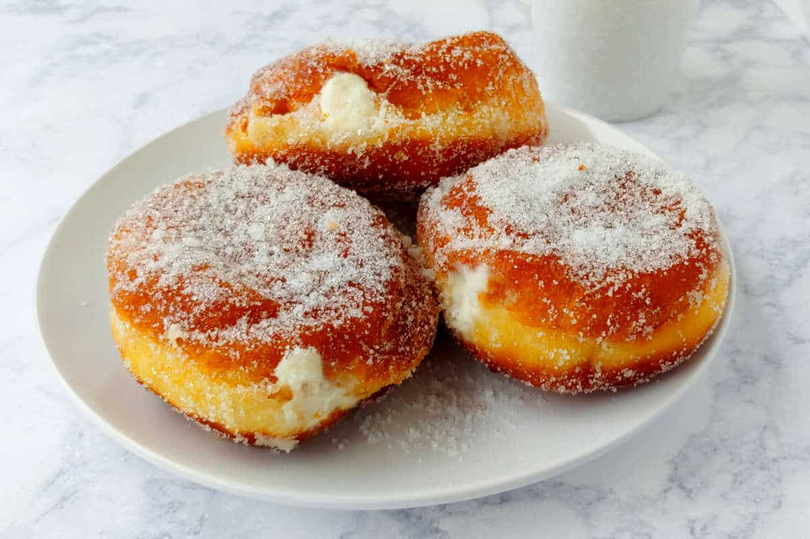
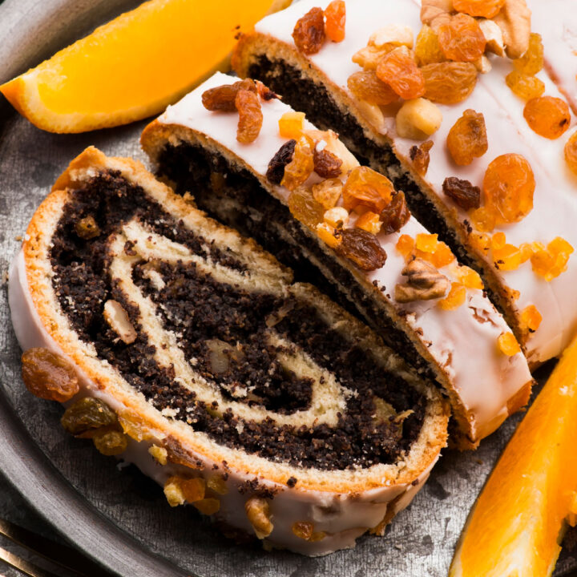
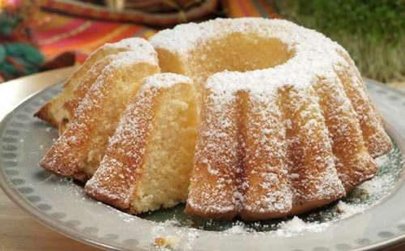

Paczki is a very popular and traditional treat. Poles even have a day dedicated to these donuts, called "Fat Thursday." This to indulge on a tasty, sweet dessert right before the traditional fast of Lent. Paczki are generally filled with fruits, vanilla cream, or jam, and topped with a sugar or glaze coating.
Refer to this recipe. This is the recipe I follow for the best paczki!
Every Polish household has these to offer along with a cup of tea whenever guests come over. This is a classic Polish treat and easy to snack on as it consists of nuts, raisins, and dried fruits. They are especially present on the dining room table on every major holiday.
Refer to this recipe. This is the recipe I follow for poppy seed rolls!
This treat is border-line bread, border-line cake. It's a debate. But there's no debate on whether it's delicious. Take my word on that. This dessert is served at every Easter dinner. It usually has a lemon kick to it, but that can be substituted with over fruity syrups, too. Try it!
Here is a lemon babka recipe link. I am guilty of never making one, but I will definitely be trying to bake one up next weekend!
